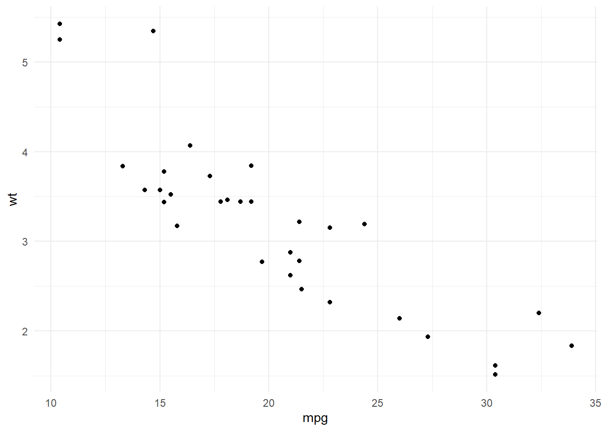
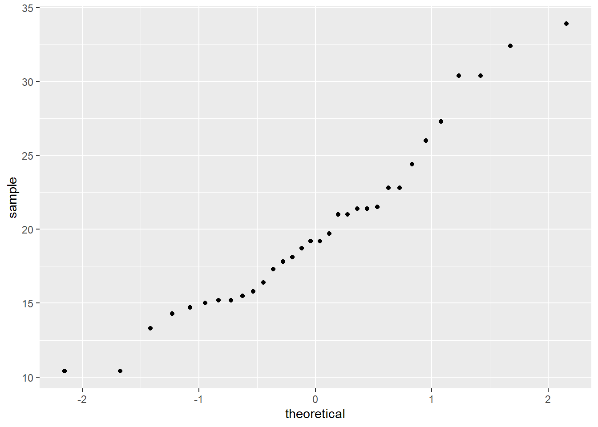
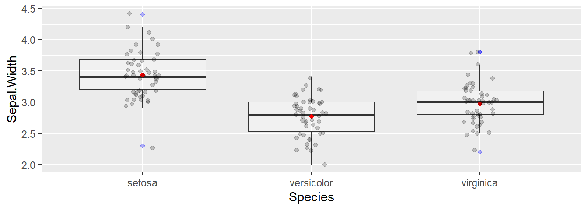
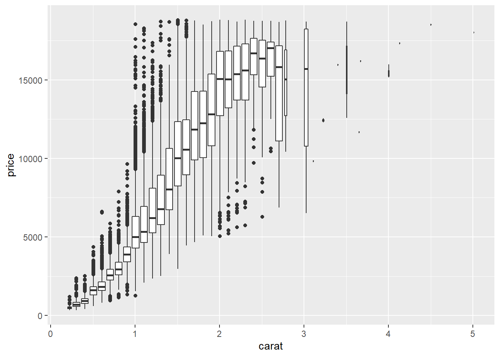
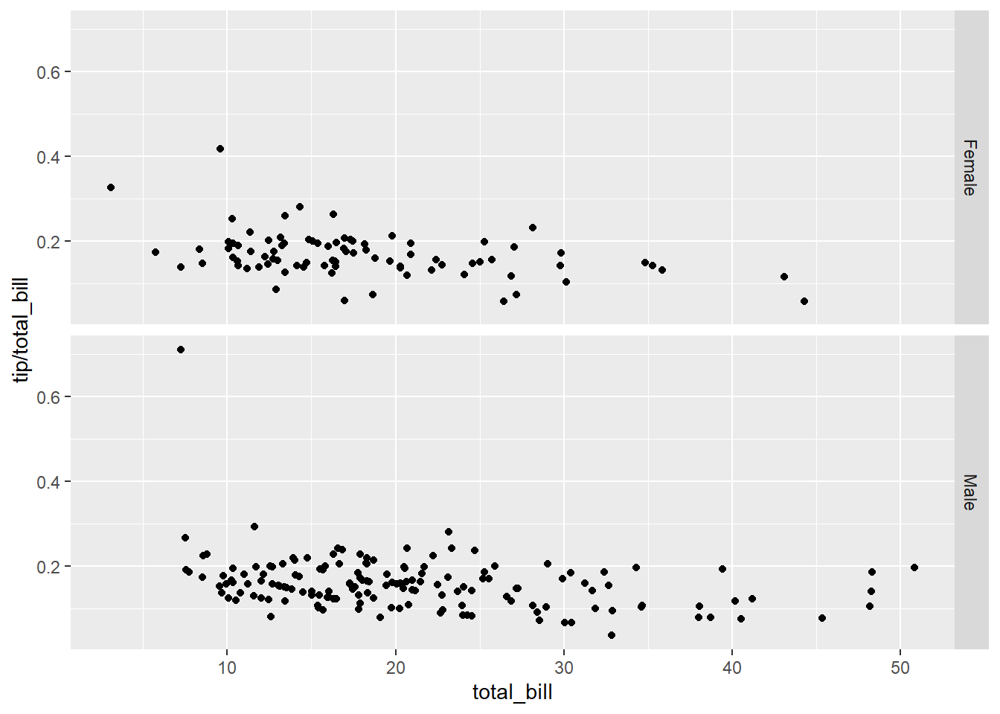

2 Introducción a Tidyverse
2.1 Introducción

Tidyverse
tidyverse es una forma elegante de usar R y hacer de este software una herramienta mejorada. Ha sido diseñado por Hadley / Rstudio e incluye distintas librería que siguen las reglas principales del manifiesto de The tidy tools. Los autores describen esta nueva implementación como:
tidyverse es un conjunto de librerías que funcionan en armonía porque comparten representaciones de datos comunes y diseño de API. El paquete tidyverse está diseñado para facilitar la instalación y carga de los paquetes principales desde el tidyverse en un solo comando.
Existen numeros ayudas, cursos y material en general para aprender todo sobre las librerías de tidyverse, pero el autor ha usado el libro R for Data Science como base para ilustrar cómo usar este conjunto de herramientas para el análisis de datos en ciencias. Este libro (del que os he puesto el link) es una excelente fuente para aprender todo sobre tidyverse. En este capítulo os referenciaré otro material que puede ser de ayuda.
El libro de R for Data Science se organiza siguiendo este esquema:

Figure 2.1: Esquema R for Data Science
De forma que las librerías incluidas en tidyverse cubren todos estos aspectos. Está pensado para facilitar tareas de gestión de datos, y en su caso, el manejo de grandes volúmenes de información de forma eficiente. Se describen técnicas que ayudan a la visualización de datos que es el primer paso que se debe llevar a cabo en cualquier análisis estadístico que se precie. Esta visualización y posterior análisis no sólo deber llevarse a cab o en toda la base de datos, puede requerirse analizar subconjuntos de datos obtenidos mediante algún filtro o inlcuso puede necesitarse recodificar o restructurar la información disponible . Quizás estos sean los procedimientos para los que tidiverse mejore de forma sustancial el uso de R tradicional (junto con la forma compacta y clara de escribir código), ya que la posterior modelización puede llevarse a cabo con decenas de librerías diseñadas para tal efecto.
2.2 Instalación
Para instalar el conjunto básico de liberías relacionadas con tidyverse basta con ejecutar_
Las librerías básicas relacionadas con tidyverse se cargan de la forma usual, con una única llamada
La diferencia con el hecho de cargar cualquier otra librería, es que en un sólo comando se instalan/cargan un par de docenas de paquetes. Como beneficio adicional, uno puede estar seguro de que todos los paquetes instalados / cargados son de versiones compatibles.
2.3 Librerías básicas
Las librerías que son más conocidas y ampliamente utilizadas en
tidyverseson:- ggplot2: visualización avanzada de datos
- dplyr: manipulación de datos de forma eficiente y escalable (usa Rcpp)
- tidyr: funciones para ordenar datos
- readr: importa datos.
- purrr: desarrolla una especie de “dialecto” de R que facilita muchas operaciones (map, Reduce, …)
- tibble: forma moderna para conceptualizar los datos.
- magrittr: canalización para hacer el código más legible (uso del “pipe” %>%)
Paquetes para manipular formatos de datos específicos:
- hms: leer fácilmente fechas y tiempos
- stringr: funciones para trabajar de forma sencilla con cadenas de carácteres
- Lubridate: Manipulación avanzada de fechas
- Forcats: funciones avanzadas con factores
Importar datos:
- DBI: define una interfaz común entre R y los sistemas de administración de bases de datos (DBMS)
- haven: importar archivos SPSS, SAS y Stata de forma sencilla
- httr: facilitar el uso del paquete curl personalizado las necesidades de las API web modernas
- jsonlite: análisis y generación de JSON rápido y optimizado para obtener estadísticas en la web
- readxl: leer archivos read.xls y .xlsx de forma sencilla y sin necesitar otras dependencias
- rvest: obtener información de páginas web
- xml2: trabajar con XML
Modelización: Existen varias librerías, pero yo prefiero usar las de R y/o Bioconductor
2.4 Manejo de datos
En tidyverse, los data.frames se trabajan como tibbles. Esto permite disponer de una forma consistente y eficiente de guardar nuestros datos permitiendo una forma sencilla de hacer transformaciones, visualización y modelización. Esta sección pretende ser una introducción básica a tidyverse por lo que sólo veremos cómo llevar a cabo los principales tipos de manipulación de datos. No obstante, también existen funciones específicas para:
- Relacionar múltiples tablas ver ejemplos.
- Trabajar con variables carácter
- Usar factores para variables categóricas de forma sencilla (sin los problemas de orden de categorías)
- Realizar operaciones con variables de tipo fecha ver ejemplos.
2.4.1 Tibbles
Empecemos introduciendo lo que es un tibble (pronunciado “tibel”). Se puede aprender más cosas ejecutando vignette("tibble") en la consola de RStudio. Tras cargar la librería tidyverse podemos crear un tibble a partir de un data.frame de la siguiente forma. Usaremos la base de datos iris a modo de ejemplo
## Sepal.Length Sepal.Width Petal.Length Petal.Width Species Y
## 1 5.1 3.5 1.4 0.2 setosa 11.492934
## 2 4.9 3.0 1.4 0.2 setosa 11.377429
## 3 4.7 3.2 1.3 0.2 setosa 12.824441
## 4 4.6 3.1 1.5 0.2 setosa 9.074302
## 5 5.0 3.6 1.4 0.2 setosa 13.449125
## 6 5.4 3.9 1.7 0.4 setosa 14.486056## # A tibble: 150 x 6
## Sepal.Length Sepal.Width Petal.Length Petal.Width Species Y
## <dbl> <dbl> <dbl> <dbl> <fct> <dbl>
## 1 5.1 3.5 1.4 0.2 setosa 11.5
## 2 4.9 3 1.4 0.2 setosa 11.4
## 3 4.7 3.2 1.3 0.2 setosa 12.8
## 4 4.6 3.1 1.5 0.2 setosa 9.07
## 5 5 3.6 1.4 0.2 setosa 13.4
## 6 5.4 3.9 1.7 0.4 setosa 14.5
## 7 4.6 3.4 1.4 0.3 setosa 11.8
## 8 5 3.4 1.5 0.2 setosa 11.8
## 9 4.4 2.9 1.4 0.2 setosa 10.2
## 10 4.9 3.1 1.5 0.1 setosa 10.5
## # ... with 140 more rowsTambién podemos crear un nuevo tibble mediante (los datos se reciclan):
## # A tibble: 5 x 3
## x y z
## <int> <dbl> <dbl>
## 1 1 1 2
## 2 2 1 5
## 3 3 1 10
## 4 4 1 17
## 5 5 1 26NOTA 1: Nunca cambia los tipos de datos! (i.e. caracter a factor)
NOTA 2: El rownames desaparece
Quizás uno de los aspectos más novedosos de las tibble sea que se ha re-definido el método print() que permite, por defecto, ver las 10 primeras filas y todas las columnas que quepan en la pantalla. Esto puede cambiarse con
## # A tibble: 150 x 6
## Sepal.Length Sepal.Width Petal.Length Petal.Width Species Y
## <dbl> <dbl> <dbl> <dbl> <fct> <dbl>
## 1 5.1 3.5 1.4 0.2 setosa 11.5
## 2 4.9 3 1.4 0.2 setosa 11.4
## 3 4.7 3.2 1.3 0.2 setosa 12.8
## 4 4.6 3.1 1.5 0.2 setosa 9.07
## 5 5 3.6 1.4 0.2 setosa 13.4
## 6 5.4 3.9 1.7 0.4 setosa 14.5
## 7 4.6 3.4 1.4 0.3 setosa 11.8
## 8 5 3.4 1.5 0.2 setosa 11.8
## 9 4.4 2.9 1.4 0.2 setosa 10.2
## 10 4.9 3.1 1.5 0.1 setosa 10.5
## # ... with 140 more rowsó
## # A tibble: 150 x 6
## Sepal.Length
## <dbl>
## 1 5.1
## 2 4.9
## 3 4.7
## 4 4.6
## 5 5
## 6 5.4
## 7 4.6
## 8 5
## 9 4.4
## 10 4.9
## # ... with 140 more
## # rows, and 5 more
## # variables:
## # Sepal.Width <dbl>,
## # Petal.Length <dbl>,
## # Petal.Width <dbl>,
## # Species <fct>,
## # Y <dbl>Podemos acceder a una columna (e.g. variable) de la misma forma que con un data.frame
## [1] 0.11263386 0.99747715 0.05467677 0.36455551 0.07494088## [1] 0.11263386 0.99747715 0.05467677 0.36455551 0.07494088## [1] 0.11263386 0.99747715 0.05467677 0.36455551 0.074940882.4.2 Importar datos
El paquete clave para leer datos es readr
read_csv () lee archivos delimitados por comas, read_csv2 () lee archivos separados por punto y coma (común en países donde, se usa como el lugar decimal), read_tsv () lee archivos delimitados por tabulaciones y read_delim () lee archivos con cualquier delimitador.
read_fwf () lee archivos de ancho fijo. Se puede especificar campos por sus anchos con fwf_widths () o su posición con fwf_positions (). read_table () lee archivos de ancho fijo donde las columnas están separadas por espacios en blanco.
read_log () lee archivos de registro de estilo Apache (servidor web de código abierto). Pero también es muy útil webreadr, que está construido sobre read_log () y proporciona muchas más herramientas útiles.
Estas funciones suelen ser mucho más rápidas (~ 10x) que sus equivalentes en R básico. Además, la importación de datos de ejecución prolongada tienen una barra de progreso para que se pueda ver lo que está sucediendo. Si se está buscando velocidad bruta, también podemos usar data.table::fread() que aunque no encaja tan bien en tidyverse puede usarse en ocasiones donde precie la velocidad (pero no es mucho más rápido). Los datos se importan como objetos que:
- son *tibbles
- no convierten vectores de caracteres en factores
- no usan nombres de filas ni modifican los nombres de columnas. Éstas son fuentes comunes de frustración con las funciones base R [¡declaración de Hadley!].
- Son más reproducibles. Las funciones de Base R heredan algún comportamiento de su sistema operativo y variables de entorno, por lo que el código para importar datos que funciona en un ordenador, podría no funcionar en el de otra persona.
Hagamos una comparación con un archivo grande
## user system elapsed
## 2.46 0.01 2.47## user system elapsed
## 0.42 0.00 0.42## [1] 733202 5Efectivamente ambos objetos contienen la misma información
## Name Chr Position Log.R.Ratio B.Allele.Freq
## 1 rs1000000 12 125456933 -0.002501764 1.000000000
## 2 rs1000002 3 185118461 -0.029741180 0.000336171
## 3 rs10000023 4 95952928 0.004015533 0.460671800
## 4 rs1000003 3 99825597 -0.142527700 0.541123600
## 5 rs10000030 4 103593179 0.365104000 1.000000000
## 6 rs10000037 4 38600725 -0.005177616 0.504625300## # A tibble: 733,202 x 5
## Name Chr Position Log.R.Ratio B.Allele.Freq
## <chr> <chr> <dbl> <dbl> <dbl>
## 1 rs1000000 12 125456933 -0.00250 1
## 2 rs1000002 3 185118461 -0.0297 0.000336
## 3 rs10000023 4 95952928 0.00402 0.461
## 4 rs1000003 3 99825597 -0.143 0.541
## 5 rs10000030 4 103593179 0.365 1
## 6 rs10000037 4 38600725 -0.00518 0.505
## 7 rs10000041 4 165841405 -0.179 0
## 8 rs10000042 4 5288053 0.168 0.998
## 9 rs10000049 4 119167668 -0.00238 0
## 10 rs1000007 2 237416793 -0.00411 0
## # ... with 733,192 more rows2.4.3 Transformación de datos
Antes de empezar a analizar los datos suele ser necesario realizar algunas transformaciones o crear nuevas variables ya que:
- Es raro que obtengamos los datos exactamente en la forma correcta que necesitamos.
- A menudo, se deberán crear algunas variables o resúmenes nuevos.
- A veces se necesita cambiar el nombre de las variables o reordenar las observaciones para que sea un poco más fácil trabajar con los datos.
Ilustremos cómo realizar estas tareas utilizando los datos disponibles en una base de datos de vuelos de NYC. El objeto nycflights13::fligths contiene los 336,776 vuelos que partieron de la ciudad de Nueva York en 2013. Los datos provienen de la Oficina de Estadísticas de Transporte de EE. UU. y están documentados en ?flights.
## # A tibble: 336,776 x 19
## year month day dep_time sched_dep_time dep_delay arr_time sched_arr_time arr_delay carrier flight tailnum origin dest air_time
## <int> <int> <int> <int> <int> <dbl> <int> <int> <dbl> <chr> <int> <chr> <chr> <chr> <dbl>
## 1 2013 1 1 517 515 2 830 819 11 UA 1545 N14228 EWR IAH 227
## 2 2013 1 1 533 529 4 850 830 20 UA 1714 N24211 LGA IAH 227
## 3 2013 1 1 542 540 2 923 850 33 AA 1141 N619AA JFK MIA 160
## 4 2013 1 1 544 545 -1 1004 1022 -18 B6 725 N804JB JFK BQN 183
## 5 2013 1 1 554 600 -6 812 837 -25 DL 461 N668DN LGA ATL 116
## 6 2013 1 1 554 558 -4 740 728 12 UA 1696 N39463 EWR ORD 150
## 7 2013 1 1 555 600 -5 913 854 19 B6 507 N516JB EWR FLL 158
## 8 2013 1 1 557 600 -3 709 723 -14 EV 5708 N829AS LGA IAD 53
## 9 2013 1 1 557 600 -3 838 846 -8 B6 79 N593JB JFK MCO 140
## 10 2013 1 1 558 600 -2 753 745 8 AA 301 N3ALAA LGA ORD 138
## # ... with 336,766 more rows, and 4 more variables: distance <dbl>, hour <dbl>, minute <dbl>, time_hour <dttm>Las funciones básicas que usaremos están disponibles en la librería dlpyr y son las siguientes:
Pick observations by their values:
filter().Reorder the rows:
arrange().Pick variables by their names:
select().Create new variables with functions of existing variables:
mutate().Collapse many values down to a single summary:
summarise().Elegir observaciones por sus valores:
filter().Reordenar las filas:
arrange().Elegir las variables por sus nombres:
select().Crear nuevas variables a partir de variables existentes:
mutate().Colapsar valores en un sólo resumen:
summarise().
Todos los verbos (e.g funciones) se usan de la misma forma:
El primer argumento es un tibble o un data.frame.
Los argumentos siguientes describen qué hacer con los datos, utilizando los nombres de las variables (sin comillas).
El resultado es un nuevo tibble.
2.4.4 Filtrar filas
R imprime los resultados o los guarda en una variable. Si desea hacer ambas cosas, podemos envolver la sintaxis entre paréntesis:
## # A tibble: 842 x 19
## year month day dep_time sched_dep_time dep_delay arr_time sched_arr_time arr_delay carrier flight tailnum origin dest air_time
## <int> <int> <int> <int> <int> <dbl> <int> <int> <dbl> <chr> <int> <chr> <chr> <chr> <dbl>
## 1 2013 1 1 517 515 2 830 819 11 UA 1545 N14228 EWR IAH 227
## 2 2013 1 1 533 529 4 850 830 20 UA 1714 N24211 LGA IAH 227
## 3 2013 1 1 542 540 2 923 850 33 AA 1141 N619AA JFK MIA 160
## 4 2013 1 1 544 545 -1 1004 1022 -18 B6 725 N804JB JFK BQN 183
## 5 2013 1 1 554 600 -6 812 837 -25 DL 461 N668DN LGA ATL 116
## 6 2013 1 1 554 558 -4 740 728 12 UA 1696 N39463 EWR ORD 150
## 7 2013 1 1 555 600 -5 913 854 19 B6 507 N516JB EWR FLL 158
## 8 2013 1 1 557 600 -3 709 723 -14 EV 5708 N829AS LGA IAD 53
## 9 2013 1 1 557 600 -3 838 846 -8 B6 79 N593JB JFK MCO 140
## 10 2013 1 1 558 600 -2 753 745 8 AA 301 N3ALAA LGA ORD 138
## # ... with 832 more rows, and 4 more variables: distance <dbl>, hour <dbl>, minute <dbl>, time_hour <dttm>2.4.5 Filtrado lógico
Estos son los operadoles lógicos que podemos aplicar
boolean operations
## # A tibble: 55,403 x 19
## year month day dep_time sched_dep_time dep_delay arr_time sched_arr_time arr_delay carrier flight tailnum origin dest air_time
## <int> <int> <int> <int> <int> <dbl> <int> <int> <dbl> <chr> <int> <chr> <chr> <chr> <dbl>
## 1 2013 11 1 5 2359 6 352 345 7 B6 745 N568JB JFK PSE 205
## 2 2013 11 1 35 2250 105 123 2356 87 B6 1816 N353JB JFK SYR 36
## 3 2013 11 1 455 500 -5 641 651 -10 US 1895 N192UW EWR CLT 88
## 4 2013 11 1 539 545 -6 856 827 29 UA 1714 N38727 LGA IAH 229
## 5 2013 11 1 542 545 -3 831 855 -24 AA 2243 N5CLAA JFK MIA 147
## 6 2013 11 1 549 600 -11 912 923 -11 UA 303 N595UA JFK SFO 359
## 7 2013 11 1 550 600 -10 705 659 6 US 2167 N748UW LGA DCA 57
## 8 2013 11 1 554 600 -6 659 701 -2 US 2134 N742PS LGA BOS 40
## 9 2013 11 1 554 600 -6 826 827 -1 DL 563 N912DE LGA ATL 126
## 10 2013 11 1 554 600 -6 749 751 -2 DL 731 N315NB LGA DTW 93
## # ... with 55,393 more rows, and 4 more variables: distance <dbl>, hour <dbl>, minute <dbl>, time_hour <dttm>## # A tibble: 316,050 x 19
## year month day dep_time sched_dep_time dep_delay arr_time sched_arr_time arr_delay carrier flight tailnum origin dest air_time
## <int> <int> <int> <int> <int> <dbl> <int> <int> <dbl> <chr> <int> <chr> <chr> <chr> <dbl>
## 1 2013 1 1 517 515 2 830 819 11 UA 1545 N14228 EWR IAH 227
## 2 2013 1 1 533 529 4 850 830 20 UA 1714 N24211 LGA IAH 227
## 3 2013 1 1 542 540 2 923 850 33 AA 1141 N619AA JFK MIA 160
## 4 2013 1 1 544 545 -1 1004 1022 -18 B6 725 N804JB JFK BQN 183
## 5 2013 1 1 554 600 -6 812 837 -25 DL 461 N668DN LGA ATL 116
## 6 2013 1 1 554 558 -4 740 728 12 UA 1696 N39463 EWR ORD 150
## 7 2013 1 1 555 600 -5 913 854 19 B6 507 N516JB EWR FLL 158
## 8 2013 1 1 557 600 -3 709 723 -14 EV 5708 N829AS LGA IAD 53
## 9 2013 1 1 557 600 -3 838 846 -8 B6 79 N593JB JFK MCO 140
## 10 2013 1 1 558 600 -2 753 745 8 AA 301 N3ALAA LGA ORD 138
## # ... with 316,040 more rows, and 4 more variables: distance <dbl>, hour <dbl>, minute <dbl>, time_hour <dttm>2.4.6 Ordenar filas
En orden ascendente
## # A tibble: 336,776 x 19
## year month day dep_time sched_dep_time dep_delay arr_time sched_arr_time arr_delay carrier flight tailnum origin dest air_time
## <int> <int> <int> <int> <int> <dbl> <int> <int> <dbl> <chr> <int> <chr> <chr> <chr> <dbl>
## 1 2013 1 1 517 515 2 830 819 11 UA 1545 N14228 EWR IAH 227
## 2 2013 1 1 533 529 4 850 830 20 UA 1714 N24211 LGA IAH 227
## 3 2013 1 1 542 540 2 923 850 33 AA 1141 N619AA JFK MIA 160
## 4 2013 1 1 544 545 -1 1004 1022 -18 B6 725 N804JB JFK BQN 183
## 5 2013 1 1 554 600 -6 812 837 -25 DL 461 N668DN LGA ATL 116
## 6 2013 1 1 554 558 -4 740 728 12 UA 1696 N39463 EWR ORD 150
## 7 2013 1 1 555 600 -5 913 854 19 B6 507 N516JB EWR FLL 158
## 8 2013 1 1 557 600 -3 709 723 -14 EV 5708 N829AS LGA IAD 53
## 9 2013 1 1 557 600 -3 838 846 -8 B6 79 N593JB JFK MCO 140
## 10 2013 1 1 558 600 -2 753 745 8 AA 301 N3ALAA LGA ORD 138
## # ... with 336,766 more rows, and 4 more variables: distance <dbl>, hour <dbl>, minute <dbl>, time_hour <dttm>y descendente
## # A tibble: 336,776 x 19
## year month day dep_time sched_dep_time dep_delay arr_time sched_arr_time arr_delay carrier flight tailnum origin dest air_time
## <int> <int> <int> <int> <int> <dbl> <int> <int> <dbl> <chr> <int> <chr> <chr> <chr> <dbl>
## 1 2013 1 9 641 900 1301 1242 1530 1272 HA 51 N384HA JFK HNL 640
## 2 2013 6 15 1432 1935 1137 1607 2120 1127 MQ 3535 N504MQ JFK CMH 74
## 3 2013 1 10 1121 1635 1126 1239 1810 1109 MQ 3695 N517MQ EWR ORD 111
## 4 2013 9 20 1139 1845 1014 1457 2210 1007 AA 177 N338AA JFK SFO 354
## 5 2013 7 22 845 1600 1005 1044 1815 989 MQ 3075 N665MQ JFK CVG 96
## 6 2013 4 10 1100 1900 960 1342 2211 931 DL 2391 N959DL JFK TPA 139
## 7 2013 3 17 2321 810 911 135 1020 915 DL 2119 N927DA LGA MSP 167
## 8 2013 6 27 959 1900 899 1236 2226 850 DL 2007 N3762Y JFK PDX 313
## 9 2013 7 22 2257 759 898 121 1026 895 DL 2047 N6716C LGA ATL 109
## 10 2013 12 5 756 1700 896 1058 2020 878 AA 172 N5DMAA EWR MIA 149
## # ... with 336,766 more rows, and 4 more variables: distance <dbl>, hour <dbl>, minute <dbl>, time_hour <dttm>NOTA: los valores missing están situados al final
2.4.7 Seleccionar columnas (e.g. variables)
Seleccionamos las columnas que queremos
## # A tibble: 336,776 x 3
## year month day
## <int> <int> <int>
## 1 2013 1 1
## 2 2013 1 1
## 3 2013 1 1
## 4 2013 1 1
## 5 2013 1 1
## 6 2013 1 1
## 7 2013 1 1
## 8 2013 1 1
## 9 2013 1 1
## 10 2013 1 1
## # ... with 336,766 more rowso las que están entre dos columnas
## # A tibble: 336,776 x 3
## year month day
## <int> <int> <int>
## 1 2013 1 1
## 2 2013 1 1
## 3 2013 1 1
## 4 2013 1 1
## 5 2013 1 1
## 6 2013 1 1
## 7 2013 1 1
## 8 2013 1 1
## 9 2013 1 1
## 10 2013 1 1
## # ... with 336,766 more rowstambién podemos seleccionar todas las columnas menos algunas
## # A tibble: 336,776 x 16
## dep_time sched_dep_time dep_delay arr_time sched_arr_time arr_delay carrier flight tailnum origin dest air_time distance hour minute
## <int> <int> <dbl> <int> <int> <dbl> <chr> <int> <chr> <chr> <chr> <dbl> <dbl> <dbl> <dbl>
## 1 517 515 2 830 819 11 UA 1545 N14228 EWR IAH 227 1400 5 15
## 2 533 529 4 850 830 20 UA 1714 N24211 LGA IAH 227 1416 5 29
## 3 542 540 2 923 850 33 AA 1141 N619AA JFK MIA 160 1089 5 40
## 4 544 545 -1 1004 1022 -18 B6 725 N804JB JFK BQN 183 1576 5 45
## 5 554 600 -6 812 837 -25 DL 461 N668DN LGA ATL 116 762 6 0
## 6 554 558 -4 740 728 12 UA 1696 N39463 EWR ORD 150 719 5 58
## 7 555 600 -5 913 854 19 B6 507 N516JB EWR FLL 158 1065 6 0
## 8 557 600 -3 709 723 -14 EV 5708 N829AS LGA IAD 53 229 6 0
## 9 557 600 -3 838 846 -8 B6 79 N593JB JFK MCO 140 944 6 0
## 10 558 600 -2 753 745 8 AA 301 N3ALAA LGA ORD 138 733 6 0
## # ... with 336,766 more rows, and 1 more variable: time_hour <dttm>Existen numerosas funciones que pueden ser de mucha utilidad para hacer selecciones más complejas y rápidas dentro de la función select()
starts_with("abc"): nombres que empiezan con “abc”.ends_with("xyz"): nombres que acaban con “xyz”.contains("ijk"): nombres que contienen “ijk”.matches("(.)\\1"): selecciona variables que coinciden con una expresión regular. Se puede aprender más constrings.num_range("x", 1:3): coincide con x1, x2 and x3.
2.4.8 Añadir nuevas variables
Debemos usar la función mutate()
flights_sml <- dplyr::select(flights,
year:day,
ends_with("delay"),
distance,
air_time
)
mutate(flights_sml,
gain = dep_delay - arr_delay,
speed = distance / air_time * 60
)## # A tibble: 336,776 x 9
## year month day dep_delay arr_delay distance air_time gain speed
## <int> <int> <int> <dbl> <dbl> <dbl> <dbl> <dbl> <dbl>
## 1 2013 1 1 2 11 1400 227 -9 370.
## 2 2013 1 1 4 20 1416 227 -16 374.
## 3 2013 1 1 2 33 1089 160 -31 408.
## 4 2013 1 1 -1 -18 1576 183 17 517.
## 5 2013 1 1 -6 -25 762 116 19 394.
## 6 2013 1 1 -4 12 719 150 -16 288.
## 7 2013 1 1 -5 19 1065 158 -24 404.
## 8 2013 1 1 -3 -14 229 53 11 259.
## 9 2013 1 1 -3 -8 944 140 5 405.
## 10 2013 1 1 -2 8 733 138 -10 319.
## # ... with 336,766 more rowsSi sólo queremos mantener las nuevas variables en nuestra tabla de datos, debemos usar transmute():
transmute(flights,
gain = dep_delay - arr_delay,
hours = air_time / 60,
gain_per_hour = gain / hours
)## # A tibble: 336,776 x 3
## gain hours gain_per_hour
## <dbl> <dbl> <dbl>
## 1 -9 3.78 -2.38
## 2 -16 3.78 -4.23
## 3 -31 2.67 -11.6
## 4 17 3.05 5.57
## 5 19 1.93 9.83
## 6 -16 2.5 -6.4
## 7 -24 2.63 -9.11
## 8 11 0.883 12.5
## 9 5 2.33 2.14
## 10 -10 2.3 -4.35
## # ... with 336,766 more rows2.4.9 Grouped summaries
Podemos agrupar variables de la siguiente forma:
## # A tibble: 1 x 1
## delay
## <dbl>
## 1 12.6by_day <- group_by(flights, year, month, day)
summarise(by_day, delay = mean(dep_delay, na.rm = TRUE))## # A tibble: 365 x 4
## # Groups: year, month [12]
## year month day delay
## <int> <int> <int> <dbl>
## 1 2013 1 1 11.5
## 2 2013 1 2 13.9
## 3 2013 1 3 11.0
## 4 2013 1 4 8.95
## 5 2013 1 5 5.73
## 6 2013 1 6 7.15
## 7 2013 1 7 5.42
## 8 2013 1 8 2.55
## 9 2013 1 9 2.28
## 10 2013 1 10 2.84
## # ... with 355 more rowsTambién podemos agrupar según varios criterios
flights %>%
group_by(year, month, day) %>%
summarise(
avg_delay1 = mean(arr_delay, na.rm=TRUE),
avg_delay2 = mean(arr_delay[arr_delay > 0], na.rm=TRUE)
)## # A tibble: 365 x 5
## # Groups: year, month [12]
## year month day avg_delay1 avg_delay2
## <int> <int> <int> <dbl> <dbl>
## 1 2013 1 1 12.7 32.5
## 2 2013 1 2 12.7 32.0
## 3 2013 1 3 5.73 27.7
## 4 2013 1 4 -1.93 28.3
## 5 2013 1 5 -1.53 22.6
## 6 2013 1 6 4.24 24.4
## 7 2013 1 7 -4.95 27.8
## 8 2013 1 8 -3.23 20.8
## 9 2013 1 9 -0.264 25.6
## 10 2013 1 10 -5.90 27.3
## # ... with 355 more rowsExisten otras funciones útiles por las que nos podría interesar agrupar
count()mean()median()min()max()quantile(x, 0.25)IQR()mad()
2.5 Uso del pipe %>%
Imaginemos que queremos explorar la relación entre la distancia y el retraso promedio para cada ubicación. Los pasos para obtener esta información serían:
Agrupar los vuelos por destino.
Resumir la información calculando la distancia, el retraso promedio y el número de vuelos.
Filtrar algunos valores que introducen ruido (producen sesgo) como el aeropuerto de Honolulu, que está casi el doble de lejos que el siguiente aeropuerto más cercano.
Utilizando dplyr escribiríamos algo como esto (aún más largo en R tradicional y menos legible):
by_dest <- group_by(flights, dest)
delay <- summarise(by_dest,
count = n(),
dist = mean(distance, na.rm = TRUE),
delay = mean(arr_delay, na.rm = TRUE)
)
delay <- filter(delay, count > 20, dest != "HNL")
delay## # A tibble: 96 x 4
## dest count dist delay
## <chr> <int> <dbl> <dbl>
## 1 ABQ 254 1826 4.38
## 2 ACK 265 199 4.85
## 3 ALB 439 143 14.4
## 4 ATL 17215 757. 11.3
## 5 AUS 2439 1514. 6.02
## 6 AVL 275 584. 8.00
## 7 BDL 443 116 7.05
## 8 BGR 375 378 8.03
## 9 BHM 297 866. 16.9
## 10 BNA 6333 758. 11.8
## # ... with 86 more rowsY podríamos tener un gráfico de la siguiente forma (veremos cómo hacer esto en la siguiente sesión)
ggplot(data = delay, mapping = aes(x = dist, y = delay)) +
geom_point(aes(size = count), alpha = 1/3) +
geom_smooth(se = FALSE)
Utilizando pipes el código quedaría mucho más compacto y legible
delays <- flights %>%
group_by(dest) %>%
summarise(
count = n(),
dist = mean(distance, na.rm = TRUE),
delay = mean(arr_delay, na.rm = TRUE)
) %>%
filter(count > 20, dest != "HNL")
delays## # A tibble: 96 x 4
## dest count dist delay
## <chr> <int> <dbl> <dbl>
## 1 ABQ 254 1826 4.38
## 2 ACK 265 199 4.85
## 3 ALB 439 143 14.4
## 4 ATL 17215 757. 11.3
## 5 AUS 2439 1514. 6.02
## 6 AVL 275 584. 8.00
## 7 BDL 443 116 7.05
## 8 BGR 375 378 8.03
## 9 BHM 297 866. 16.9
## 10 BNA 6333 758. 11.8
## # ... with 86 more rows2.6 Ejercicios (manejo de datos)
Los siguientes ejercicios os ayudarán a trabajar con las tareas más básicas de dplyr. Debéis realizarlos usando las funciones que hemos visto en esta presentación - no vale usar código R básico. Usaremos los datos mtcars vistos en clase. Recordad que podemos obtener más información sobre las variables con ?mtcars. También podemos usar glimpse() para ver qué tipo de variables tenemos, y en caso de ser variables categóricas, qué categorías hay (Siempre es muy recomendable hacer este tipo de visualización de datos para ver que no hayan valores raros ni categorías no definidas o errores en la definición de categorías - por ejemplo tener la variable sexo como: H, M, h, m, hombre).
Visualiza la variable ‘hp’ usando la función
select(). Intenta usar la funciónpull()para hacer lo mismo y ver cuál es la diferencia.Visualiza todos los datos excepto la columna ‘hp’.
Visualiza las columnas mpg, hp, vs, am y gear escribiendo el código más corto posible.
Crea un objeto que se llame ‘mycars’ que contenga las columnas mpg y hp pero que el nombre de la variable sea ‘miles_per_gallon’ y ‘horse_power’ respectivamente. Pon los rownames del data.frame en una variable que se llame ‘model’ [PISTA: debes buscar qué función hay para poner los rownames en una columna].
Crea una nueva variable en ‘mycars’ que sea ‘km_per_litre’ que describa el consumo del coche (variable ‘mpg’). NOTA: 1 mpg es 0.425 km / l.
Selecciona al azar (y visualiza) la mitad de las observaciones de ‘mycars’ [PISTA: busca una función de
dplyrque haga esto de forma sencilla (similar asampleen R tradicional).Crea un objeto ‘mycars_s’ que contenga de la 10ª a la 35ª fila de mycars [PISTA: considera usar la función
slice()].Visualiza el objeto ‘mycars_s’ sin duplicados [PISTA_ encia: considera usar la función
distinct()].Visualiza del objeto ‘mycars_s’ todas las observaciones que tengan mpg> 20 y hp> 100.
Visualiza la la fila correspondiente al coche Lotus Europa.
2.7 Visualización de datos
R es una herramienta muy potente para realizar gráficos, mucho más que otros software de análisis estadístico como SPSS, SAS o Stata. Aún así, ggplot fue desarrollado con los siguientes objetivos:
The aim of the grammar is to “bring together in a coherent way things that previously appeared unrelated and which also will provide a basis for dealing systematically with new situations” (Cox 1978). How well have we succeeded? (Wickham, 2012)
``The emphasis in ggplot2 is reducing the amount of thinking time by making it easier to go from the plot in your brain to the plot on the page." (Wickham, 2012)```
Base graphics are good for drawing pictures; ggplot2 graphics are good for understanding the data." (Wickham, 2012)
En definitiva, deberíamos usar ggplot porque:
- Es flexible
- Tenemos gran control de lo que estamos haciendo
- Crea gráficos muy bonitos (y se usan en la mayoría de revistas científicas)
- De forma más importante, hay mucha documentación sobre cómo hacer gráficos muy complicados de forma sencilla (libros, páginas web, infografrías, etc.
Aquí podéis encontrar una chuleta con las principales funciones
Cada visualización en ggplot se compone de:
plot = data + Aesthetics + geometry
- Datos (Data) que queremos representar (que serán un data frame).
- Características estéticas (aesthetic mappings) que describen cómo queremos que los datos se vean en el gráfico. Para más información podemos consultar la vignette (vignette(“ggplot2-specs”)). Como luego veremos, se introducen con la función aes() y se refieren a:
- posición (en los ejes)
- color exterior (color) y de relleno (fill)
- forma de puntos (shape)
- tipo de línea (linetype)
- tamaño (size)
- Objetos geométricos (Geom) representan lo que vemos en un gráficos (puntos, líneas, etc.). Todo gráfico tiene, como mínimo, una geometría. La geometría determina el tipo de gráfico:
- geom_point (para puntos)
- geom_lines (para lineas)
- geom_histogram (para histograma)
- geom_boxplot (para boxplot)
- geom_bar (para barras)
- geom_smooth (líneas suavizadas)
- geom_polygons (para polígonos en un mapa)
- etc. (si ejecutáis el comando help.search(“geom_”, package = “ggplot2”) podéis ver el listado de objetos geométricos)
Por tanto, para construir un gráfico con ggplot2 comenzamos con la siguiente estructura de código:
ggplot(datos, aes()) + geom_tipo()
Por ejemplo para hacer una gráfica que represente las millas por galón (mpg) en función del peso del coche, podemos hacer los siguiente:
## mpg cyl disp hp drat wt qsec vs
## Mazda RX4 21.0 6 160 110 3.90 2.620 16.46 0
## Mazda RX4 Wag 21.0 6 160 110 3.90 2.875 17.02 0
## Datsun 710 22.8 4 108 93 3.85 2.320 18.61 1
## Hornet 4 Drive 21.4 6 258 110 3.08 3.215 19.44 1
## Hornet Sportabout 18.7 8 360 175 3.15 3.440 17.02 0
Podemos cambiar a una de estas estéticas
theme_dark()theme_minimal()theme_classic()theme_void()theme_test()
ggplot(mtcars) + # data
aes(x = mpg, y=wt) + # Aesthetics
geom_point() + # geometry (layer)
theme_minimal() # theme 
o alguna geometría

A continuación ilustratemos cómo hacer los principales tipos de gráficos que necesitamos en estadística
2.7.1 Distribución de datos categóricos
## # A tibble: 53,940 x 10
## carat cut color clarity depth table price x y z
## <dbl> <ord> <ord> <ord> <dbl> <dbl> <int> <dbl> <dbl> <dbl>
## 1 0.23 Ideal E SI2 61.5 55 326 3.95 3.98 2.43
## 2 0.21 Premium E SI1 59.8 61 326 3.89 3.84 2.31
## 3 0.23 Good E VS1 56.9 65 327 4.05 4.07 2.31
## 4 0.290 Premium I VS2 62.4 58 334 4.2 4.23 2.63
## 5 0.31 Good J SI2 63.3 58 335 4.34 4.35 2.75
## 6 0.24 Very Good J VVS2 62.8 57 336 3.94 3.96 2.48
## 7 0.24 Very Good I VVS1 62.3 57 336 3.95 3.98 2.47
## 8 0.26 Very Good H SI1 61.9 55 337 4.07 4.11 2.53
## 9 0.22 Fair E VS2 65.1 61 337 3.87 3.78 2.49
## 10 0.23 Very Good H VS1 59.4 61 338 4 4.05 2.39
## # ... with 53,930 more rows## # A tibble: 5 x 2
## cut n
## <ord> <int>
## 1 Fair 1610
## 2 Good 4906
## 3 Very Good 12082
## 4 Premium 13791
## 5 Ideal 21551

2.7.2 Distribución de datos continuos

2.7.3 Distribución de datos continuos según una variable categórica
ggplot(data = diamonds, mapping = aes(x = price)) +
geom_freqpoly(mapping = aes(colour = cut), binwidth = 500)
Idealmente esta descriptiva debemos hacerla con un boxplot

Box-plot

Podemos reordenar el boxplot para facilitar la interpretación de la siguiente manera (notamos que el código es mucho más compacto y legible que en R tradicional)

Podemos cambiar las coordenadas añadiendo otra función
ggplot(data = mpg) +
geom_boxplot(mapping = aes(x = reorder(class, hwy,
FUN = median),
y = hwy)) + coord_flip()
Los gráficos se pueden reciclar y aprovechar el código ya escrito
plt <- ggplot(data = mpg) +
geom_boxplot(mapping = aes(x = reorder(class, hwy,
FUN = median),
y = hwy))
plt + coord_flip()Podemos mejorar un boxplot añadiendo más información tras ’ + ’
ggplot(iris, aes(x=Species, y=Sepal.Width) ) +
geom_boxplot(alpha=0.3, outlier.colour = "blue") +
geom_point(stat= "summary", fun.y=mean,
shape=16, size=1.5, color="red") +
geom_jitter(width = 0.1, alpha = 0.2)
2.7.4 Dos variables categóricas
Podemos resumir dos variables categóricas de esta forma

Otra aproximación sería contar cuántos hay en una categoría con dplyr:
## # A tibble: 35 x 3
## color cut n
## <ord> <ord> <int>
## 1 D Fair 163
## 2 D Good 662
## 3 D Very Good 1513
## 4 D Premium 1603
## 5 D Ideal 2834
## 6 E Fair 224
## 7 E Good 933
## 8 E Very Good 2400
## 9 E Premium 2337
## 10 E Ideal 3903
## # ... with 25 more rowsy luego visualizarlo con geom_tile() que nos daría un gráfico tipo heatmap
diamonds %>%
count(color, cut) %>%
ggplot(mapping = aes(x = color, y = cut)) +
geom_tile(mapping = aes(fill = n))
2.7.5 Dos variables continuas

Scatterplots se vuelven menos útiles cuando el tamaño del conjunto de datos aumenta porque los puntos coinciden. En ese caso podemos usar la estética alpha:

Otra opción es discretizar una de las variables continuas y usar boxplot()
ggplot(data = diamonds, mapping = aes(x = carat, y = price)) +
geom_boxplot(mapping = aes(group = cut_width(carat, 0.1)))
A veces nos interesa añadir una línea de regresión al gráfico. Exsiten numerosas librerías que extienden las facilidades de ggplot com esta:
library(ggpmisc)
set.seed(1234)
iris <- mutate(iris,
Y = 1.5 + 3.2*Sepal.Width +
rnorm(nrow(iris)))
ggplot(iris, aes(x = Sepal.Width, y = Y)) +
geom_smooth(method = "lm", se=FALSE, color="black",
formula = y ~ x) +
stat_poly_eq(formula = y ~ x,
aes(label = paste(..eq.label.., ..rr.label..,
sep = "~~~")),
parse = TRUE) +
geom_point()
R tiene unas capacidades gráficas excelentes, pero el uso de ggplot hace que éstas sean aún más espectaculares. Imaginemos que queremos comparar la expresión génica según la tasa de crecimiento en 20 genes y seis condiciones1
## # A tibble: 711 x 7
## name BP MF systematic_name nutrient rate expression
## <chr> <chr> <chr> <chr> <chr> <dbl> <dbl>
## 1 "SUL1" sulfate transport sulfate transporter activity YBR294W Glucose 0.05 -0.32
## 2 "" biological process unknown molecular function unknown YKL187C Glucose 0.05 4.13
## 3 "QDR2" multidrug transport multidrug efflux pump activity YIL121W Glucose 0.05 1.07
## 4 "LEU1" leucine biosynthesis 3-isopropylmalate dehydratase activity YGL009C Glucose 0.05 -1.12
## 5 "PHO5" phosphate metabolism* acid phosphatase activity YBR093C Glucose 0.05 2.39
## 6 "PHO12" biological process unknown acid phosphatase activity YHR215W Glucose 0.05 0.9
## 7 "PHO11" phosphate metabolism acid phosphatase activity YAR071W Glucose 0.05 1.14
## 8 "GIT1" glycerophosphodiester transport glycerophosphodiester transporter activity YCR098C Glucose 0.05 0.77
## 9 "AGP3" amino acid transport amino acid transporter activity YFL055W Glucose 0.05 0.570
## 10 "" biological process unknown molecular function unknown YOL164W Glucose 0.05 0.53
## # ... with 701 more rowsEste tendría que ser el (largo) código para hacer este gráfico usando funciones básicas de R (el aspecto del gráfico es mejorable y la sintaxis de R ilegible)
par(mar = c(1.5, 1.5, 1.5, 1.5))
colors <- 1:6
names(colors) <- unique(genes$nutrient)
m <- matrix(c(1:20, 21, 21, 21, 21), nrow = 6,
ncol = 4, byrow = TRUE)
layout(mat = m, heights = c(.18, .18, .18, .18, .18, .1))
genes$combined <- paste(genes$name, genes$systematic_name)
for (gene in unique(genes$combined)) {
sub_data <- filter(genes, combined == gene)
plot(expression ~ rate, sub_data,
col = colors[sub_data$nutrient], main = gene)
for (n in unique(sub_data$nutrient)) {
m <- lm(expression ~ rate,
filter(sub_data, nutrient == n))
if (!is.na(m$coefficients[2])) {
abline(m, col = colors[n])
}
}
}
# create a new plot for legend
plot(1, type = "n", axes = FALSE, xlab = "", ylab = "")
legend("top", names(colors), col = colors, horiz = TRUE, lwd = 4)
Sin embargo con ggplot2 bastaría con
ggplot(genes, aes(rate, expression, color = nutrient)) +
geom_point() +
geom_smooth(method = "lm", se = FALSE) +
facet_wrap(~name + systematic_name, scales = "free_y")
2.7.6 Facets
Faceting es el proceso que en el dividimos la ventana del gráfico en varias partes pequeñas (una cuadrícula) y muestra un gráfico similar en cada sección. Cada sección generalmente muestra el mismo gráfico para un grupo específico del conjunto de datos. Aquí podemos ver cómo llevar a cabo este tipo de gráficos. Utilizaremos una base de datos sobre propinas
## total_bill tip sex smoker day time size
## 1 16.99 1.01 Female No Sun Dinner 2
## 2 10.34 1.66 Male No Sun Dinner 3
## 3 21.01 3.50 Male No Sun Dinner 3
## 4 23.68 3.31 Male No Sun Dinner 2
## 5 24.59 3.61 Female No Sun Dinner 4
## 6 25.29 4.71 Male No Sun Dinner 4Imaginemos que queremos representar qué propinas se dan en función del total de la cuenta

Ahora nos puede interesar obtener el mismo gráfico para hombres y mujeres. Para ello, podemos hacer el faceting de forma vertical

u horizontal

también según dos variables

En lugar de crear los paneles con una variable en la dirección horizontal o vertical, las gráficas se pueden colocar una al lado de la otra, envolviéndose con un cierto número de columnas o filas. La etiqueta de cada figura estará en la parte superior.

Podemos cambiar todo lo que queramos. Este es sólo un ejemplo
sp + facet_grid(sex ~ day) +
theme(strip.text.x = element_text(size=8, angle=75),
strip.text.y = element_text(size=12, face="bold"),
strip.background = element_rect(colour="brown",
fill="tomato"))
En este link tenéis la referencia de ggplot2.
2.8 Ejercicios (Visualización de datos)
Visualiza el número de vuelos para cada aerolínia por mes.
Visualiza la distribución de la variabla carat según el precio en el dataset
diamonds.Carga los datos qe están en https://raw.githubusercontent.com/isglobal-brge/TeachingMaterials/master/Master_Modelling/data/genome.txt en tu sesión de RStudio utilizando la función
read_delim(NOTA: los datos están delimitados por tabulaciones - no hace falta bajarlos al ordenador se cargan desde la URL).
El archivo contiene información sobre ~730K variantes genéticas en todo el genoma:
Name: variante genómica (single nucleotide polymorphism)
Chr: cromosoma
Position: posición en el cromosoma
Log.R.Ratio: log-ratio de la intensidad de los dos alelos
B.Allele.Freq: frecuencia del alelo alternativo
- ¿Cuál es el valor esperado (media) de
Log.R.RatioyB.Allel.Freqpara cada cromosoma? (muestra el código de R que usas para obtener dicha información) - Crea un “facet plot” que represente el
Log.R.Ratiopara cada cromosoma - Crea un “facet plot” que represente el
B.Allele.Freqpara los cromosomas 1, 2, 3, …, 6 y pinta la etiquetaB.Allele.Freqen rojo.
- ¿Cuál es el valor esperado (media) de
ejemplo obtenido de http://varianceexplained.org/r/why-I-use-ggplot2/)↩︎